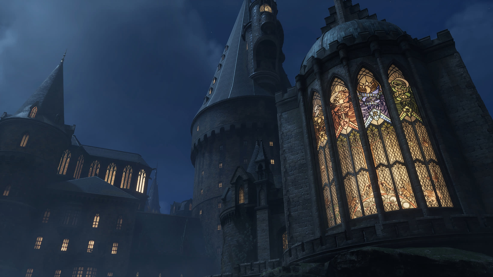

La atmosfera magica
La composicion traduce el aire gotico del juego con dorados, azul profundo y una jerarquia visual que recuerda los pasillos solemnes del castillo.
Ambientado en 1890, Hogwarts Legacy convierte el castillo, Hogsmeade y el Bosque Prohibido en espacios de estudio y aventura. Esta portada resume la relacion entre magia antigua, casas, criaturas y exploracion en una lectura visual del juego.


El castillo funciona como eje narrativo: aulas, torres y pasillos condicionan el avance del personaje y la lectura del mundo.
La casa elegida define la sala comun, el tono inicial y parte de la experiencia escolar dentro del juego.

El mapa conecta Hogwarts, Hogsmeade y el bosque como tres escalas de riesgo, comercio y descubrimiento.
La composicion traduce el aire gotico del juego con dorados, azul profundo y una jerarquia visual que recuerda los pasillos solemnes del castillo.
La informacion se organiza por capas: portada, hechizos, casas, mapa y noticias, para seguir la logica de exploracion y descubrimiento del juego.
La referencia al Castillo de Alnwick explica la base arquitectonica que inspira la silueta de Hogwarts, sus torres y su escala monumental.
La seccion agrupa elementos del juego como si fueran apuntes del Field Guide: hechizos, criaturas y espacios que sostienen la fantasia escolar y el conflicto magico.
Cada marcador resume la geografia ludica del juego: Hogwarts como nucleo del castillo, Hogsmeade como extension comercial y el Bosque Prohibido como frontera del riesgo.
La bitacora conecta las piezas del recorrido de Hogwarts como un registro de lugares, hechizos y decisiones dentro del castillo.